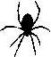

Ki Bu Bölümde Şişko Charlie’nin Eve Taksiyle Bile Dönemediği Anlatılır
Daisv saatin çalmasıyla uyandı. Yatakta bir kedi yavrusu gibi gerindi. Banyodan duş sesi geliyordu, demek ki ev arkadaşı da uyanmışa. Üzerine pembe fırfırlı bir sabahlık geçirdi ve hole çıkar.
Banyo kapısından, “Yulaf ezmesi ister misin?” diye seslendi ev arkadaşına.
“istemem aslında. Ama ille de yapacağım diyorsan, yerim.”
“Bir kıza arzulandığım hissettirmeyi iyi biliyorsun,” dedi Daisy ve mutfağa gidip yulaf ezmesini ocağa koydu.
Yatak odasına geri döndü, iş elbiselerini giydi, sonra da aynada kendine baka. Yüzünü buruşturdu ve saçlarını arkada sıkı bir topuz yapü.
Preston’h, ince yüzlü, beyaz bir kadın olan ev arkadaşı Carol, başım yatak odasının kapısından uzattı. Hızlı hızlı saçlarım kuruluyordu. “Banyoyu sana bıraktım. Yulaf ezmesi ne durumda?”
“Muhtemelen karıştırmak lazım.”
“Geçen gece neredeydin? Sybilla’nın doğum gününe gideceğim diye çıktın, ama sonra gece eve dönmedin.”
“Senin üstüne vazife değil,” Daisy mutfağa gidip yulaf ezmesini karıştırdı. Bir tutam tuz atıp biraz daha karıştırdı. Sonra yulaf ezmesini kâselere doldurup tezgahın üzerine koydu.
“Carol? Yulaf ezmen soğuyor.”
Carol mutfağa girdi, oturdu ve yulaf ezmesine baktı. Yan giyinikti. “Bu gerçek bir kahvalu sayılmaz aslında, öyle değil mi? Bana sorarsan, kahvaltı dediğinde kızarmış yumurta, sucuk, sosis ve ızgara domates olur.”
“Sen pişir, ben yerim,” dedi Daisy.
Carol, yulaf ezmesinin üzerine bir tatlı kaşığı şeker koydu. Şöyle bir baktı. Sonra bir kaşık daha şeker koydu. “Hayır, yemezsin. Yiyeceğim dersin. Ama sonra yok efendim kolesterolmüş, yok efendim kızarmış yumurtanın böbreklerde yarattığı tahribatmış, bıdı bıdı konuşmaya başlarsın.” Yulaf ezmesini ucundan, sanki zehirlenmekten korkarmış gibi tattı. Daisy ona bir bardak çay uzattı. “Senin şu böbreklerin yok mu! Bak dedim de aklıma geldi. Aslında, hoş bir değişiklik olabilir. Sen hiç böbrek yedin mi, Daisy?”
“Bir kere,” dedi Daisy “Bana sorarsan, yanm kilo ciğeri kızartıp üzerine işesen aynı şey.”
Carol dudaklarını büzdü. “Ne ayıp,” dedi.
“Yulaf ezmeni ye sen.”
Yulaf ezmelerini ve çaylarını bitirdiler. Kâseleri bulaşık makinesine koydular, ama makine henüz tam dolmamış olduğu için, çalıştırmadılar. Sonra arabaya binip işe gitmek üzere yola çıktılar. Arabayı artık üzerine üniformasını giymiş olan Carol kullanıyordu.
Daisy boş masalarla dolu bir odaya girdi ve masasına yürüdü.
Oturur oturmaz telefon çaldı. “Daisy? Geciktin."
Kız saatine baktı. “Hayır amirim, gecikmedim. Bunun dışında, bu sabah yapmamı istediğiniz bir şey var mı?”
“Olmaz mı? Coats denilen adam aranacak. Müdürün arkadaşı mıymış neymiş. İkisi de Crystal Palace’ı taraftarıymış, öyle bir şey işte. Sabah sabah telefondan iki mesaj attı bana. Müdüre telefonundan mesaj atmayı öğreteni bir bulsam...” Daisy bilgileri not aldı ve numarayı çevirdi. En resmi ve ciddi sesiyle, “Ben polis memuru Dedektif Day. Size nasıl yardımcı olabilirim?” dedi.
“Hah,” dedi bir erkek sesi. “Dün gece müdüre de dediğim gibi... Kendisi çok tatlı bir adamdır ve eski arkadaşımdır. Esaslı adamdır yani. Neyse işte, bana sizin bürodan binleriyle konuşmamı salık verdi. Bir ihbarda bulunmak istiyorum. Aslında ortada işlenmiş bir suç var mı ondan da pek emin değilim ya... Her şeyin gayet mantıklı bir açıklaması olabilir, tabii, neden olmasın? Ama, şey, işte bazı usulsüzlükler var ve doğrusunu isterseniz birtakım, ee, mali usulsüzlükler yapmış olabileceği ihtimaline karşı, muhasebecime birkaç haftalığına izin verdim.”
“Biraz daha aynntı verebilir misiniz,” dedi Daisy. “Tam adınız nedir, efendim? Ve muhasebecinin adını da alayım.” “Benim adım Grahame Coats,” dedi telefonun ucundaki adam. “Grahame Coats Ajansı’ndan arıyorum. Muhasebecim de Nancy adında bir adam. Charles Nancy.”
Daisy iki ismi de not etti. İki isim de ona bir şey çağnştır-mamıştı.
Şişko Charlie, Örümcek eve gelir gelmez onunla tartışmayı planlamıştı. Tartışmanın provasını kafasında yapmış, argümanının üzerinden defalarca geçmiş ve her seferinde, tartışmayı net bir şekilde kendisi kazanmışa.
Ne var ki, Örümcek önceki gece eve gelmemişti ve Şişko Charlie, muhtemelen uykusuzluktan ve cinsel tatminsizlikten muzdarip insanlara yönelik olarak hazırlanmış “Bize kıçını göster!” isimli televizyon yarışmasını uyuklayarak izlerken sonunda sızıp kalmıştı.
Örümcek perdeleri açtığında, Şişko Charlie de sızdığı kanepede gözlerini açtı. “Güzel bir gün,” dedi Örümcek.
“Sen!” dedi Şişko Charlie. “Sen Rosie’yi öpüyordun. İnkar etme, gözlerimle gördüm.”
“Öpmem gerekiyordu,” dedi Örümcek.
“Gerekiyordu da ne demek. Hiç de gerekmiyordu.”
“Ama Rosie benim sen olduğumu sanıyordu.”
“Ama sen, ben olmadığını biliyordun. Onu öpmeyebilir-din.”
“Ama onu öpmeyi reddetseydim, onu öpmeyenin sen olduğunu zannederdi.”
“Ama ben değildim.”
“O bunu bilmiyordu ki. Ben sadece yardımcı olmaya çalıştım.”
“Yardımcı olmak,” dedi Şişko Charlie kanepeden, “genel olarak, nişanlımı öpmeden yapman gereken bir şeydir. Dişinin ağrıdığını söyleyebilirdin, mesela.”
“O zaman yalan söylemiş olurdum,” dedi Örümcek, ilkeli bir ses tonuyla.
“Ama zaten yalan söylüyordun! Benmişsin gibi yapıyordun.”
“Yalanı katlamış olurdum ama,” diye açıkladı Örümcek. “İşe gidecek durumda olmadığından, seni kollamak için sen olduğumu söyledim insanlara. Hayır, hayır...” dedi, “daha fazla yalan söyleyemezdim. Kendimi çok kötü hissederdim aksi takdirde.”
“E, şimdi de ben kendimi çok kötü hissediyorum. Sizi öpüşürken gördüm."
“Ah,” dedi Örümcek, “ama o seni öptüğünü zannediyordu.”
“Bunu söyleyip durma!”
“Aslında, tam tersine, kendini iyi hissetmen lazım,” dedi Örümcek. “Öğle yemeği ister misin?”
“Tabii ki öğle yemeği istemem. Saat kaç?”
“Öğle yemeği vakti,” dedi Örümcek. “Ve sen işe yine geç kaldın. Bana böyle teşekkür ettiğine göre, iyi ki seni bugün de kollamamışım.”
"Sıkıntı yok,” dedi Şişko Charlie. “iki hafta izin verdiler. Bir de ikramiye.”
Örümcek bir kaşını kaldırdı.
“Bak," dedi Şişko Charlie, tartışmanın ikinci raunduna geçmenin vakti geldiğini düşünerek, “senden kurtulmak istediğimi filan düşünme ama, ne zaman gitmeyi düşünüyorsun?” “Eh işte, buraya geldiğimde bir günlük bir ziyaret planlamıştım. Hadi bilemedin iki gün. Küçük kardeşimle tanışmaya yetecek kadar kalıp sonra gidecektim. Çok meşgul bir adamım ben.”
“O zaman bugün gidiyorsun, öyle mi?”
“İlk planım buydu,” dedi Örümcek. “Ama sonra seninle tanıştım. Bütün bir ömrü birbirimizden uzakta geçirmiş olduğumuza inanamıyorum, kardeşim.”
“Ben inanabiliyorum.”
“Kan bağı, sudan güçlüdür,” dedi Örümcek.
“Su güçlü değildir,” diye itiraz etti Şişko Charlie.
“Votkadan güçlüdür, o zaman. Veya yanardağdan. Veya amonyaktan. Bak, anlatmak istediğim, seninle tanışmak, nasıl desem... bir ayrıcalık. Daha düne kadar birbirimizin hayatında yoktuk. Yarın, hatta hemen bugün yeni bir başlangıç yapalım bence. Geçmişi ardımızda bırakıp, yeni bağlar kuralım; kardeşlik bağları.”
“Sen kesinlikle Rosie’nin peşindesin,” dedi Şişko Charlie. “Kesinlikle,” diye onayladı onu Örümcek. “Peki bu durumda sen ne yapmayı planlıyorsun?”
“Ne yapmayı mı planlıyorum? Benim bir şey planlamama gerek yok ki. Rosie benim nişanlım.”
“Sıkımı yok. O benim sen olduğumu düşünüyor.”
“Şunu söylemeyi bırakır mısın lütfen?”
Örümcek ellerini bir aziz gibi açtı, ama sonra dudaklarını yalayarak, tüm etkiyi mahvetti.
“Peki,” dedi Şişko Charlie, “senin planın ne? Benmişsin gibi yaparak onunla evlenecek misin?"
“Evlenmek mi?” Örümcek durdu ve bir an düşündü. “Ne. Korkunç. Bir fikir.”
“Oysa ben onunla evlenmeyi dört gözle bekliyorum.”
“Örümcek evlenmez. Ben evlenen türden değilim."
“Ne yani, benim Rosie’mi kendine layık bulmuyor musun?"
Örümcek cevap vermedi. Odadan çıktı. Şişko Charlie nedense tartışmada Örümcek’e bir gol attığını düşünüyordu. Kanepeden kalktı, önceki gece yediği Çin usulü tavukiu erişte ve çıtır domuz köftelerinin boş kutularını toplayıp çöpe attı. Sonra yatak odasına gitti, içinde uyuduğu elbiselerini çıkarttı. Yeni ve temiz elbiseler giymek istiyordu, ama çamaşır yıkamamış olduğu için temiz giysisi kalmadığını fark etti ve çıkarttığı giysilerini hararetle fırçalayarak üzerlerine yapışmış erişte parçalarını temizledikten sonra, yine onları giydi.
Mutfağa gitti. Örümcek mutfak masasında oturuyor ve iki kişiye yetecek büyüklükteki bir bifteği afiyetle yiyordu.
“Onu nereden buldun?” diye sordu Şişko Charlie, ama cevabı zaten bildiğinden emindi.
“Sana sordum ya öğle yemeği ister misin diye," dedi Örümcek, yumuşak bir ses tonuyla.
“Bifteği nereden buldun?”
“Dolaptaydı.”
“Bu biftek,” dedi Şişko Charlie, parmağını idam isteyen bir savcı gibi sallayarak, “bu akşamki yemek için aldığım biftek. Rosie ile yiyeceğim yemek. Rosie için kendi ellerimle pişireceğim yemek! Ve sen orada şey gibi oturmuş, ee, biftek yiyen bir kişi gibi oturmuş ve onu yiyorsun ve...”
“Sıkıntı yok," dedi Örümcek.
“Ne demek sıkıntı yok?
“Şöyle ki." dedi Örümcek, “bu sabah Rosie’yi aradım ve onu bu akşam yemeğe çıkaracağımı söyledim. Yani bifteğe ih-tivacın kalmadı zaten."
Şişko Charlie ağzını açtı. Sonra yine kapattı. “Buradan gitmeni istiyorum,” dedi.
“İnsanın arzusunun onu ya da bunu aşması, yeteneklerini ya da boyunu filan, işte neyse öyle bir şeyi aşması iyi bir şey; voksa cennete ne gerek kalırdı?" dedi Örümcek, neşeyle ve Şişko Charlie'nin bifteğini iştahla tıkınırken.